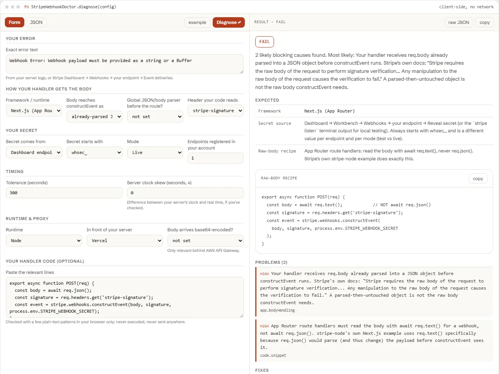

Stripe says"No signatures found…"?Find the exact cause.
Paste the exact error text, how your handler reads the request body and the Stripe-Signature header, and where your whsec_ secret comes from. Get the one cause that's actually wrong and a copy-paste fix for Next.js, Express, Fastify, NestJS, Django, Flask, FastAPI, Rails, Laravel, Go, .NET, or serverless.
- 16 frameworks & runtimes covered
- 125 automated tests
- 0 €, no account
- runs entirely in your browser

01 Diagnose
Describe your handler. Get the one thing that's actually wrong.
Nothing you type is sent anywhere; the tool never even asks for your secret's value, only its prefix and source. The check runs in your browser against Stripe's documented webhook rules.
02 Problem
Three reasons a webhook that looks configured still fails signature verification.
Stripe's own troubleshooting docs say a "No signatures found" error means exactly one of three parameters is wrong. These three causes account for almost every case.
-
The body isn't raw anymore.
constructEvent needs the exact bytes Stripe sent. A global JSON body-parser, a JSON.parse, or req.json() instead of req.text() all change those bytes before verification runs.
-
The wrong secret.
A Dashboard endpoint and a running stripe listen each generate their own whsec_ secret. Test mode and live mode each have a separate one too, even on the same endpoint URL.
-
Timing or the header.
A server clock more than 5 minutes off real time trips the tolerance check. A header read under the wrong name, or an edge runtime calling the synchronous constructEvent instead of the async version, fails before the HMAC is even compared.
03 How it works
One function. Config in, diagnosis out.
No server, no API key, no signup. doctor-stripe.js is plain JavaScript: read it, fork it, or run it in your own scripts or CI.
import { diagnose } from './doctor-stripe.js'; // or, loaded globally: const { diagnose } = window.StripeWebhookDoctor; const result = diagnose({ error: { message }, app: { framework, bodyHandling, usesBodyParserGlobally, readsHeader, secretSource, secretPrefix, mode, endpointsCount, tolerance, runtime, proxy, bodyBase64, clockSkewSeconds }, code: { snippet }, }); // result { "status": "fail" | "warn" | "pass", "summary": "…", "expected": { framework, secretSource, bodyAccess: { code, note } }, "problems": [ { severity, code, message, path, value, fix } ], "fixes": [ { title, value, where } ], "checklist": [ "…" ], "disclaimer": "…" }
Everything runs client-side. The form above calls this exact function in your browser. There is no backend, no API key, and no request that carries your config anywhere.
It classifies the error text you paste against five known constructEvent/signature error strings, checks raw-body handling, the secret's source and prefix, the Stripe-Signature header, tolerance and clock skew, and edge/proxy quirks like API Gateway's base64 body or a Cloudflare Worker's missing constructEventAsync, and reports which one actually applies, with a framework-specific fix.
04 Questions
Questions developers actually search for.
Straight answers to the same webhook signature questions this tool diagnoses, for when you just need the answer, not the checker.
Why does Stripe say no signatures found matching the expected signature?
Stripe's own troubleshooting docs say this comes from exactly one of three parameters being wrong: the request body, the Stripe-Signature header, or the endpoint secret. In practice the most common cause is the wrong secret (a Dashboard endpoint's whsec_ used with a stripe listen event, or the other way round, or an API key pasted in by mistake). The second most common cause is the raw request body being changed before it reaches constructEvent: parsed to JSON, re-serialized, or consumed by a global body-parser middleware first.
How do I get the raw body in Next.js App Router?
Read it with await req.text(), never await req.json(). stripe-node's own App Router example does exactly this: const body = await req.text(); then stripe.webhooks.constructEvent(body, signature, secret). req.json() parses the body into an object first, which changes the bytes constructEvent needs to verify against the signature.
Which webhook secret do I use: Dashboard or stripe listen?
Whichever one actually sent you the request. A webhook endpoint you create in the Dashboard has its own whsec_ secret, shown once you click Reveal secret. Running stripe listen locally prints a separate secret in your terminal, generated just for that forwarding session. Stripe's own docs warn: don't verify signatures on events forwarded by the CLI using the secret from a Dashboard-managed endpoint, or the other way around.
What does timestamp outside the tolerance zone mean?
The timestamp Stripe signed into the Stripe-Signature header is further from your server's current clock time than your tolerance window allows. Stripe's libraries default this tolerance to 300 seconds (5 minutes). The usual cause is a server clock that has drifted out of sync; Stripe recommends using NTP to keep it accurate. Setting the tolerance to 0 does not fix this: Stripe's docs warn that a tolerance of 0 disables the recency check entirely, rather than making it stricter.
Do I need a different secret for test and live mode?
Yes. Stripe's own docs state it directly: if you use the same endpoint for both test and live API keys, the secret is different for each one. If your endpoint works in test mode but fails in live mode (or the reverse), check that you copied the whsec_ value for the mode that is actually sending you events, not the other one.
Does this tool send my secret anywhere?
No. Everything runs in your browser. You are only asked to describe your configuration in general terms (framework, how the body is read, which secret prefix you're using, whether the source is a Dashboard endpoint or stripe listen); the tool never asks for the secret value itself, and nothing you type is sent to a server.
05 Free
Free.
No account, no payment, no usage limit: it runs as a static page in your browser, so there is no server to bill for.
Tell me when a new tool lands. New tools only. No newsletter, no sharing. Reply to any mail to be removed.
Thanks. You will hear from us only when something new is live.
Could not save. Write to andrej@arling.sk.